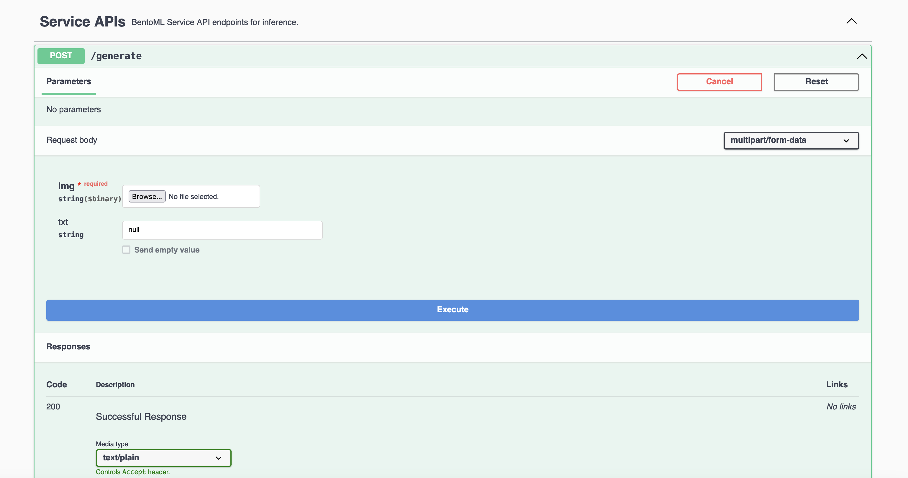

Intel Optimized Runner#
BLIP (Bootstrapping Language Image Pre-training) is a technique to improve the way AI models understand and process the relationship between images and textual descriptions. It has a variety of use cases in the AI field, particularly in applications that require a nuanced understanding of both visual and textual data, such as image captioning, visual question answering (VQA), and image-text matching. This document demonstrates how to build an image captioning application on top of a BLIP model with BentoML.
Prerequisites#
Python 3.8+ and
pipinstalled. See the Python downloads page to learn more.You have a basic understanding of key concepts in BentoML, such as Services. We recommend you read Quickstart first.
(Optional) We recommend you create a virtual environment for dependency isolation. See the Conda documentation or the Python documentation for details.
Install dependencies#
Clone the project repository and install all the dependencies.
git clone https://github.com/bentoml/BentoBlip.git
cd BentoBlip
pip install -r requirements.txt
Create a BentoML Service#
Define a BentoML Service to customize the serving logic. The example service.py file in the project uses the BLIP model Salesforce/blip-image-captioning-large, which is capable of generating captions for given images, optionally using additional text input for context. You can choose another model based on your need.
from __future__ import annotations
import typing as t
import bentoml
from PIL.Image import Image
MODEL_ID = "Salesforce/blip-image-captioning-large"
@bentoml.service(
resources={
"memory" : "4Gi"
}
)
class BlipImageCaptioning:
def __init__(self) -> None:
import torch
from transformers import BlipProcessor, BlipForConditionalGeneration
self.device = "cuda" if torch.cuda.is_available() else "cpu"
self.model = BlipForConditionalGeneration.from_pretrained(MODEL_ID).to(self.device)
self.processor = BlipProcessor.from_pretrained(MODEL_ID)
print("Model blip loaded", "device:", self.device)
@bentoml.api
async def generate(self, img: Image, txt: t.Optional[str] = None) -> str:
if txt:
inputs = self.processor(img, txt, return_tensors="pt").to(self.device)
else:
inputs = self.processor(img, return_tensors="pt").to(self.device)
out = self.model.generate(**inputs, max_new_tokens=100, min_new_tokens=20)
return self.processor.decode(out[0], skip_special_tokens=True)
Here is a breakdown of the Service code:
The
@bentoml.servicedecorator defines theBlipImageCaptioningclass as a BentoML Service, specifying that it requires4Giof memory. You can customize the Service configurations if necessary.The Service loads the BLIP model based on
MODEL_IDand moves the model to a GPU if available, otherwise it uses the CPU.The
generatemethod is exposed as an asynchronous API endpoint. It accepts an image (img) and an optionaltxtparameter as inputs. If text is provided, the model generates a caption considering both the image and text context; otherwise, it generates a caption based only on the image. The generated tokens are then decoded into a human-readable caption.
Run bentoml serve in your project directory to start the Service.
$ bentoml serve service:BlipImageCaptioning
2024-01-02T08:32:35+0000 [INFO] [cli] Starting production HTTP BentoServer from "service:BlipImageCaptioning" listening on http://localhost:3000 (Press CTRL+C to quit)
Model blip loaded device: cuda
The server is active at http://localhost:3000. You can interact with it in different ways.
curl -s -X POST \
-F txt='unicorn at sunset' \
-F 'img=@image.jpg' \
http://localhost:3000/generate
import bentoml
from pathlib import Path
with bentoml.SyncHTTPClient("http://localhost:3000") as client:
result = client.generate(
img=Path("image.jpg"),
txt="unicorn at sunset",
)
Visit http://localhost:3000, scroll down to Service APIs, and click Try it out. In the Request body box, select an image, optionally enter your prompt text and click Execute.
This is the image sent in the request. Expected output:
{kind=link}
unicorn at sunset by a pond with a beautiful landscape in the background, with a reflection of the sun in the water
Deploy to production#
After the Service is ready, you can deploy the project to BentoCloud for better management and scalability.
First, specify a configuration YAML file (bentofile.yaml) to define the build options for your application. It is used for packaging your application into a Bento. Here is an example file in the project:
service: "service:BlipImageCaptioning"
labels:
owner: bentoml-team
project: gallery
include:
- "*.py"
- "demo.jpeg"
python:
requirements_txt: "./requirements.txt"
Make sure you have logged in to BentoCloud, then run the following command in your project directory to deploy the application to BentoCloud.
bentoml deploy .
Once the application is up and running on BentoCloud, you can access it via the exposed URL.
Note
Alternatively, you can use BentoML to generate an OCI-compliant image for a more custom deployment.